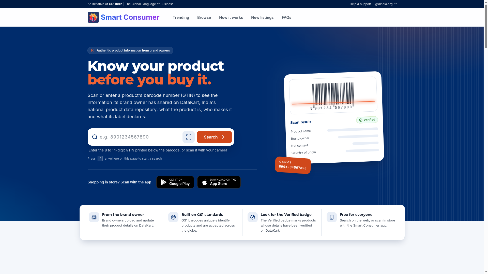
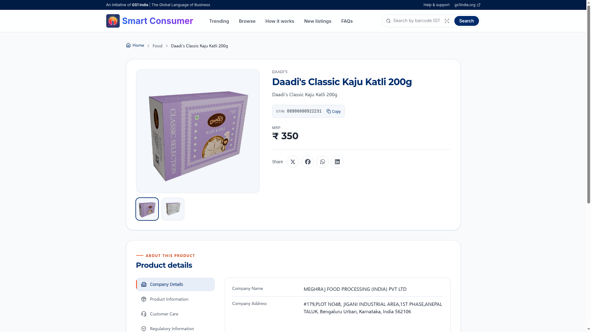
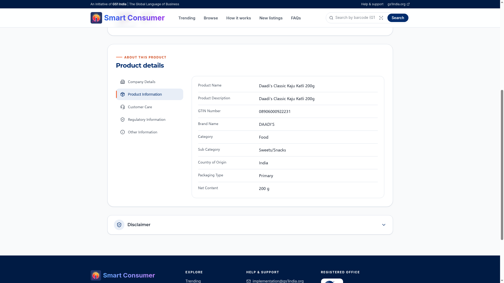
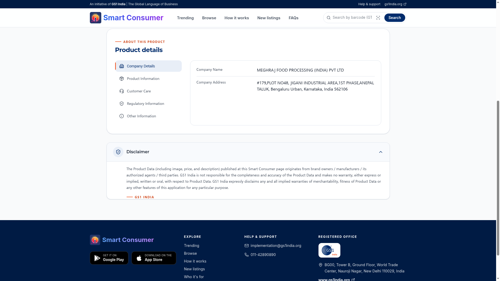

EVERYDAY TOOL · GS1 INDIA
Smart Consumer: check the product details behind a barcode
Smart Consumer lets you look up product information shared through GS1 India's DataKart repository. Type a pack's barcode number to compare its name, size and company details. It is a useful second check, not proof that the item in your hand is genuine.
Why use it?
Online listings and packaging can leave you unsure about the company behind a product or the exact pack size. Smart Consumer offers a separate product-data lookup powered by DataKart, where brand owners maintain product information. Its current FAQ says records without a Verified badge show information uploaded by the owner.
This is different from asking a chatbot to identify a product from its name: you are checking the identifier against this repository. It is also different from a community-edited food database. Neither difference means every field is current or independently checked.
The GS1 India service page describes the app and its DataKart connection. A GS1 India article directly links the Smart Consumer website. This guide covers the public web lookup, not a business DataKart subscription.

1. Enter the number below the barcode
Open the official website and find Barcode number (GTIN). Enter every digit printed under the barcode, then choose Search. Supported GTIN lengths are 8, 12, 13 or 14 digits. A GTIN identifies a product and pack configuration, not an individual physical unit.
We tested the manual route using 8906000922231, a number shown in the site's public catalogue. Search opened a record for Daadi's Classic Kaju Katli 200g. The result displayed the equivalent 14-digit form, 08906000922231, with a leading zero.
We also entered a three-digit value. The site stayed on the search screen and explained the accepted lengths. That is an input check, not proof that every correctly sized number will have a record.
The page offers a camera button and mobile-app links. We did not grant camera access, scan a physical barcode or install either app. Typing the number was enough for our public sample.

2. Compare the record with your pack
Check the exact product name, brand and net content first. A different size or variant is not a match just because the name sounds familiar. Then read the Company Details and Product Information tabs. Our example's Product Information tab showed 200 g and a Country of Origin field. Those are displayed record values, not findings from inspecting an actual box.
The sampled Regulatory Information tab displayed an FSSAI licence number and a food-type field. We did not independently verify that licence's current status. A displayed regulatory number is a lead for a separate check with the regulator, not approval from AiCoN.
The example also showed an MRP. Treat it as catalogue information, not a live selling-price offer or a promise about another batch or shop. The example product is included only to demonstrate the lookup. We did not buy, taste or endorse it.

890 does not mean made in India
The global GS1 prefix standard explicitly says prefixes do not identify a product's country of origin, because companies can manufacture anywhere. The 890 prefix is allocated through GS1 India. It is not a manufacturing-location certificate.
An older GS1 India blog uses broader origin wording. For this point, use the global standard rather than that shortcut. Read the pack and the record's separate origin field, and seek further evidence if origin matters to your decision.
No result does not automatically mean fake
First check the digits and pack variant. The current Smart Consumer FAQ says the brand owner may not yet have uploaded the product details to DataKart. Missing or incomplete data therefore cannot, by itself, establish that a pack is counterfeit.
Likewise, a copied genuine barcode can lead to a genuine product's record without proving the pack carrying it is genuine. The lookup does not replace checking seals, batch/expiry details, seller reliability or the manufacturer's own verification route.
Read the data disclaimer
The sampled page's Disclaimer says product data, including images, prices and descriptions, originates from brand owners, manufacturers, authorised agents or third parties. It also says GS1 India does not warrant that the data is complete or accurate.
Use the record to spot mismatches and ask better questions. Do not treat its marketing language, a green badge or a successful search as a guarantee about every field or the physical product. We did not establish a Verified-badge result in our sample.

Cost and privacy
The consumer website describes the service as free. Our sampled web search requested no login, card or payment. Paid business services described on the separate DataKart pages are not required by the public lookup we tested.
The linked Google Play listing's developer declaration says the app may collect location, personal information and other data types; it also declares no third-party sharing. We did not audit those statements or install the app. A public web search is not proof of no tracking. Use a product number, not private identity or payment information, in the search box.
Exactly what we tested
- Entered a public catalogue GTIN and opened the matching product record.
- Opened Company Details, Product Information and Regulatory Information, then expanded the data disclaimer.
- Entered an undersized value and saw the length validation message.
- Loaded the result at 390 × 844 and checked that the page did not overflow horizontally.
This was a browser-sized check, not a physical-phone or camera test. No account, app installation, product purchase, physical-pack authentication, regulator lookup, review, message, complaint or share was submitted. Four figures show four distinct public scenes. The home page's decorative barcode illustration is not our search result.
Sources
- Smart Consumer home and FAQ and sample result with its data disclaimer.
- GS1 India Smart Consumer and DataKart service description.
- Global GS1 prefix standard and Verified by GS1 background.
- GS1 India domain-linking article, 8 October 2025, not authority for inferring origin or counterfeit status from a missing record.
- Linked Google Play listing, developer declarations only, app not installed.
Independent explainer by AiCoN. Not a product endorsement, GS1 publication, food-safety decision or counterfeit test. Source screenshots and identities retain their rights holders' ownership.